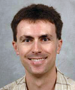
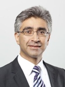

IEEE SEED — Sept. 20 to 21, 2021
Please join us on Zoom for the virtual symposium. All registrants should have received automated e-mail with Zoom details. If you have any questions
about joing the Zoom video
please contact ieee.seed.video@gmail.com.
The IEEE International Symposium on Secure and Private Execution Environment Design (SEED) is a forum which brings together researchers from the computer architecture and computer security communities into one venue that focuses on the design of architectural and system primitives which provide secure and private execution environments for applications, containers, or virtual machines.
Registration and Attendance
You can register here for the symposium. The symposium will utilize Zoom for all the presentations,
registered participants will receive Zoom information by e-mail. Please contact
Tianwei Zhang (Registration Chair) and Paul Gazzillo (Virtual Platform Chair)
with any issues regarding
registration or receiving Zoom information or joining the Zoom sessions.
Keynote Speakers
We are pleased to announce that Prof. Milos Prvulovic (Georgia Tech)
and Ahmad-Reza Sadeghi (Technische Universität Darmstadt)
will give this year's keynote speeches at IEEE SEED.
Keynote I: Milos Prvulovic, "Analog Side Channels ≟ Sensor Modalities"
Abstract:
This talk will explore what we think of as analog side channels as being a form of sensing, and also argue that sensing using physical side-effects is present in both nature and various sciences outside of computing. The talk will then explore the lessons that can be learned from sensing in nature, medicine, and other scientific disciplines. Finally, the talk will discuss current trends in analog side channel attacks and mitigations and, just as importantly, in current research and the future of non-adversarial uses of side channels, with examples from our work on detection of anomalies in software execution and in the hardware itself, verifying correct operation of software/hardware systems, accurate attribution of execution time to program code and specific hardware events, etc.

Bio:
Milos Prvulovic is a Professor and Associate School Chair in the School of Computer Science at Georgia Tech. His research focuses on hardware and software support for program monitoring, debugging, and security. His research on understanding the relationship between program execution and the resulting "side-channel" signals is has been funded by DARPA, NSF, OFOSR, and ONR, and has led to numerous publications, and a number of best paper awards and nominations, in top-tier venues across several research areas. Dr. Prvulovic is a senior member of Association of Computing Machinery (ACM) and Institute of Electrical and Electronics Engineers (IEEE), and has served as the chair of the IEEE Technical Committee on Microprogramming and Microarchitecture (TCuArch) in 2016.
Keynote II: Ahmad-Reza Sadeghi, "Promises Made, but Not Kept?
The Struggle and Future of Trusted Computing"
Abstract:
The large attack surface of applications and commodity operating systems has motivated academia and industry to develop and deploy trusted computing technologies that promise to provide Trusted Execution Environments and other security features on computing platforms to protect sensitive data and applications. However, the currently deployed security architectures seem unable to keep these promises, particularly in the face of the next generation security threats, namely, cross-layer attacks that allow unprivileged software to exploit hardware design and implementation flaws, as recently shown, e.g., by Meltdown, Spectre, and alike. Cross-layer attacks reach far beyond exploiting microarchitectural flaws and affect a wide range of computing platforms. They also constitute a fundamental paradigm shift, disrupting traditional threat models that have mainly focused on software-only vulnerabilities and often unjustifiably assumed that the underlying hardware to be correct and trustworthy.
In this talk, we present a brief overview of Trusted Computing landscape, its promises, pitfalls and opportunities. We then discuss the recent trends in building RISC-V security architectures including our own work that aims to address the shortcomings of the existing solutions. Finally, we briefly report about the valuable insights we gained on cross-layer attacks in the course of world’s largest hardware security competition
that we have been conducting with Intel and Texas AMU since 2018.

Bio:
Ahmad-Reza Sadeghi is a professor of Computer Science and the head of the System Security Lab at Technical University of Darmstadt, Germany. He has also been leading several Collaborative Research Labs with Intel since 2012, and with Huawei since 2019.
He has studied both Mechanical and Electrical Engineering and holds a Ph.D. in Computer Science from the University of Saarland, Germany. Prior to academia, he worked in R&D of Telecommunications enterprises, amongst others Ericsson Telecommunications. He has been continuously contributing to security and privacy research. He was Editor-In-Chief of IEEE Security and Privacy Magazine, and currently serves on the editorial board of ACM TODAES, ACM TIOT and ACM DTRAP.
For his influential research on Trusted and Trustworthy Computing he received the renowned German “Karl Heinz Beckurts” award. This award honors excellent scientific achievements with high impact on industrial innovations in Germany. In 2018, he received the ACM SIGSAC Outstanding Contributions Award for dedicated research, education, and management leadership in the security community and for pioneering contributions in content protection, mobile security and hardware-assisted security. In 2021, he was honored with Intel Academic Leadership Award at USENIX Security conference for his influential research on cybersecurity and in particular on hardware-assisted security.